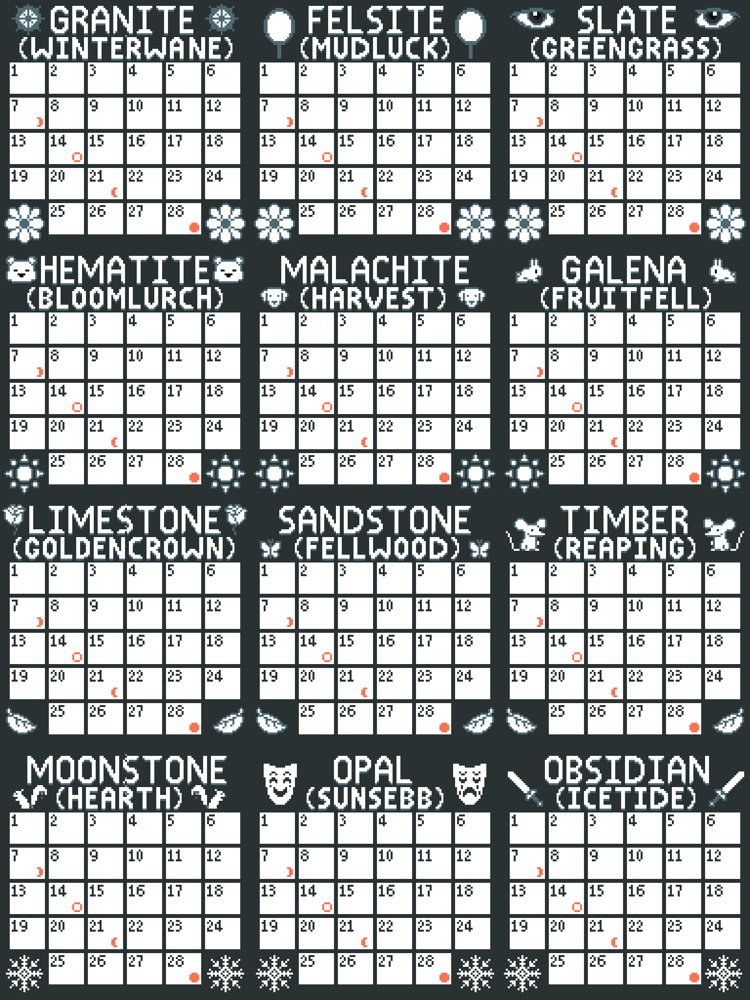

Time in roleplay on this server has a set ratio to real world time, but is also relative to how interactions are progressing in character. Mechanically, the Minecraft sun will rise and fall six times per IRL day, with that ratio mostly applying to broad timekeeping, the months and years of the server. Unlike the real world, every month in an in character year has the exact same number of days, twenty eight, or exactly four weeks. Some leeway in regards to exactly how fast time passes in character while you’re engaged in roleplay with someone is acceptable, for example; to smooth over the time it takes for someone to type a response.
There are several ways to track the passage of time, both while you are on the server or just hanging out in the discord.
When you are on the server, the command /checktime can be used to receive an exact report of the in character date.
When not playing on the server, you can also use our helpful discord bot Nuwa to get the same information with the command, Hey Nuwa what is the time?, in our bot channel.
Some roleplay you engage in will be scheduled using the in character dates, but usually with an accompanying real world time, to avoid confusion. We also use countdown timers for server wide events, due to the fact we have players in all sorts of different time zones, and a countdown eliminates the need to convert between them.
A simple website to help you create a discord time stamp can be found here.

Our server has a dedicated in-character calendar, which is different for either faction, though the Entente calendar has become the default on Nebelloren. The beginning and ending of the ingame months are aligned exactly with the lunar cycle. Unlike in the real world where they are more parallel systems rather than intrinsically linked, ingame months begin with a waning full moon, and end with a waxing full moon.
| Entente Calendar | Wildchoir Calendar | Season |
|---|---|---|
| Granite | Winterwane | Early Spring |
| Felsite | Mudluck | Mid Spring |
| Slate | Greengrass | Late Spring |
| Hematite | Bloomlurch | Early Summer |
| Malachite | Harvest | Mid Summer |
| Galena | Fruitfell | Late Summer |
| Limestone | Goldencrown | Early Autumn |
| Sandstone | Fellwood | Mid Autumn |
| Timber | Reaping | Late Autumn |
| Moonstone | Hearth | Early Winter |
| Opal | Sunsebb | Mid Winter |
| Obsidian | Icetide | Late Winter |
Certain server events and holidays are linked to IRL holidays, and as such function on a six year cycle ingame, for example:
There are also some incharacter holidays celebrated once every ingame year, for example the New Year occurs every Granite/Winterwane 1, though such holidays are not always celebrated, due to the fact that celebrating the same holiday every two months could be rather dull.
Now, depending on your lifestyle, you likely won’t be spending twenty four hours a day, seven days a week on a Minecraft server, so that leads to the obvious question of, “What is my character doing with all this time?”. Generally, that's for you to decide, but here are a few ideas:
Downtime is a very useful concept for player immersion, but there are also some very clear don'ts, in addition to the dos you've seen already.
What's important to remember about downtime is this, it's a roleplaying tool. It helps player immersion and makes the world feel more full, even when you aren't online. It is not a method for doing something difficult that you'd rather avoid.